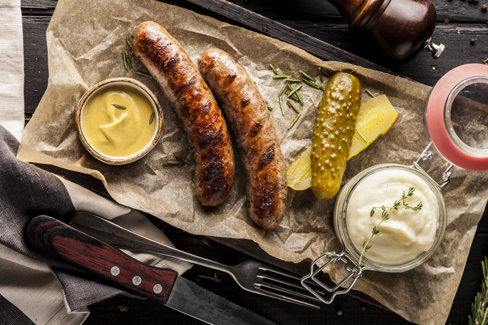
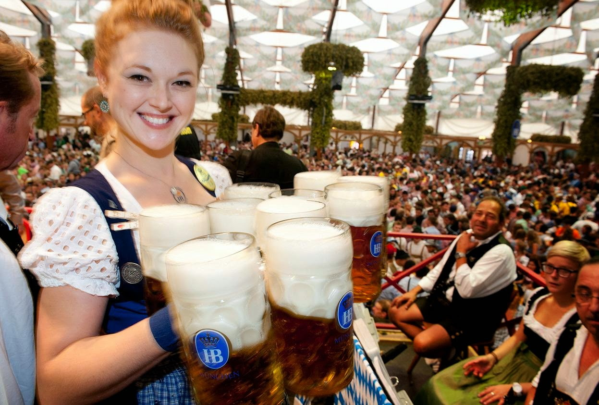
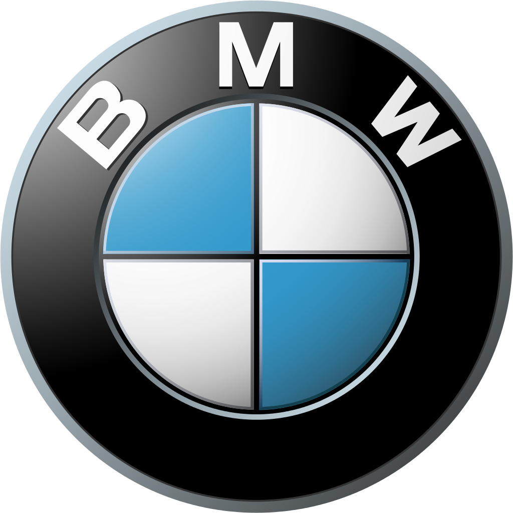

მთავარი კერძი

გერმანიის ერთ-ერთი ყველაზე ცნობილი კერძია ბრატვურსტი — შემწვარი ძეხვი, რომელსაც ხშირად სინიით ან კარტოფილის პიურესთან ერთად მიირთმევენ. ასევე პოპულარულია შნიცელი და პრეცელი (დიდი ნაწნავივით ფორმის პური).
__________________________________________________________________________________________________________________________________________________________________________________________________________________
ტრადიცია

გერმანიაში განსაკუთრებით ცნობილი ტრადიციაა ოქტობერფესტი — ბავარიაში ჩატარებული ლუდისა და ტრადიციული მუსიკის ფესტივალი. ასევე უყვართ საშობაო ბაზრები, სადაც ყიდიან ხელნაკეთ ნივთებს, ტკბილეულს და სუფთა ღვინოს.
__________________________________________________________________________________________________________________________________________________________________________________________________________________
საინტერესო ფაქტები
გერმანიაში 1,500-ზე მეტი სახეობის ლუდი და 300-ზე მეტი სახეობის პური არსებობს!

____________________________________________________________________________
გერმანია არის ევროპაში მოსახლეობის რაოდენობით ერთ-ერთი ყველაზე დიდი ქვეყანა.
_______________________________________________________________________________
გერმანიაში ბევრი ცნობილი მანქანის ბრენდია — BMW, Mercedes-Benz, Volkswagen.


← დაბრუნდი
← მთავარი
ზემოთ